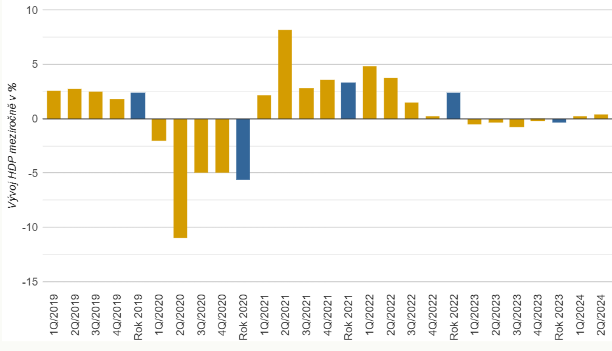
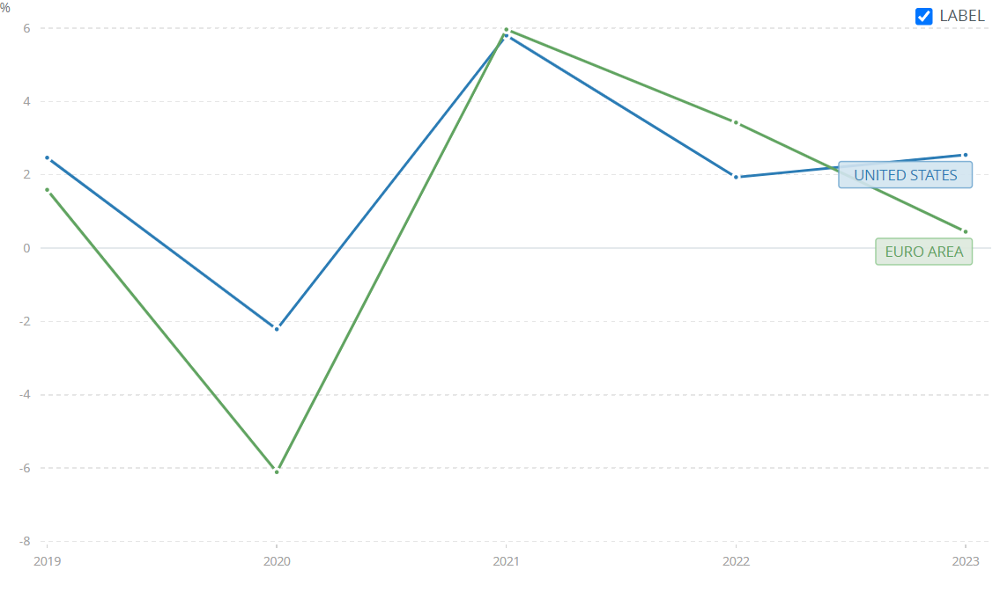
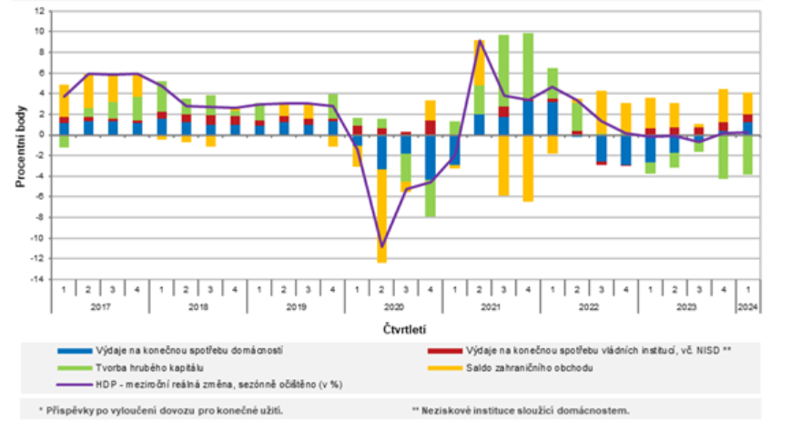
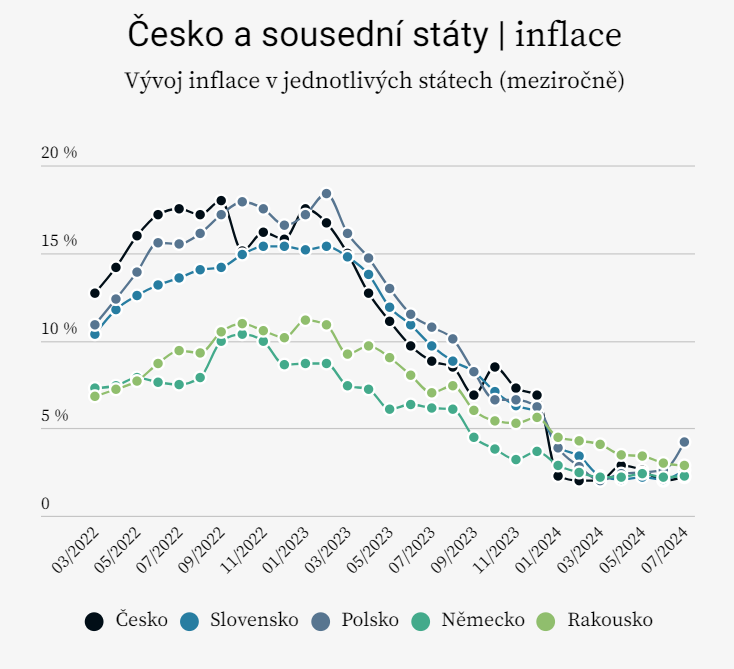
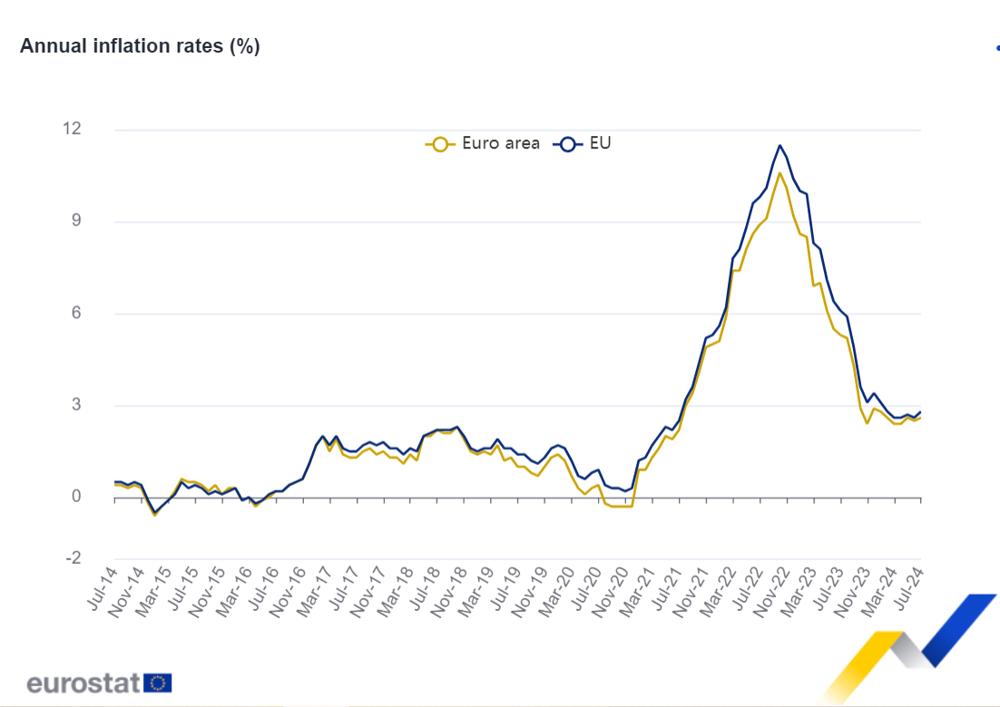
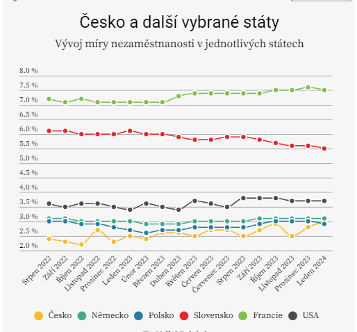

2 Ekonomické základy
- Dahlquist, J. R., &; Knight, R. (2022). Principles of finance. OpenStax, Rice University. https://openstax.org/details/books/principles-finance
- Chapter 3 - Economic Foundations: Money and Rates
- MANKIW, N. Gregory. Zásady ekonomie. Praha: Grada, 2000, 763 s. ISBN 80-7169-891-1.
Výstupy z učení:
- Porozumět základním konceptům mikroekonomie, včetně teorií poptávky, nabídky a rovnovážné ceny.
- Chápat klíčové makroekonomické ukazatele, jako je inflace, nezaměstnanost nebo hrubý domácí produkt a jejich dopad na ekonomiku.
- Identifikovat a interpretovat fáze hospodářského cyklu.
- Chápat vztah vybraných faktorů na vývoj finančních indikátorů
2.1 Mikroekonomie: Poptávka, nabídka, rovnováha
Mikroekonomie se zabývá rozhodováním jednotlivých ekonomických subjektů, jako jsou firmy a spotřebitelé.
- Pomáhá finančním manažerům lépe pochopit trh, cenotvorbu a dostupnost zdrojů.
2.1.1 Poptávka
Poptávka vyjadřuje množství zboží či služeb, které jsou spotřebitelé ochotni a schopni koupit za různé ceny, pokud ostatní faktory zůstanou konstantní.
Zákon poptávky popisuje nepřímý vztah mezi cenou a poptávaným množstvím – při nižší ceně roste poptávané množství. Tento vztah je znázorněn na poptávkové křivce, která je obvykle klesající.
| Cena ($) | Množství |
|---|---|
| 30 | 0 |
| 25 | 10 |
| 20 | 20 |
| 15 | 30 |
| 10 | 40 |
| 5 | 50 |

Změny v jiných faktorech, jako jsou příjmy, preference spotřebitelů nebo ceny substitutů (podobných statků), mohou způsobit posun poptávkové křivky. Například nárůst ceny substitutu posune poptávkovou křivku doprava, zatímco pokles poptávky, například vlivem negativní publicity, ji posune doleva.
| Cena ($) | Množství |
|---|---|
| 30 | 9 |
| 25 | 19 |
| 20 | 29 |
| 15 | 39 |
| 10 | 49 |
| 5 | 59 |

2.1.2 Nabídka
Nabídka vyjadřuje množství zboží či služeb, které jsou výrobci ochotni a schopni prodat za různé ceny, pokud ostatní faktory zůstanou konstantní.
Zákon nabídky popisuje přímý vztah mezi cenou a nabízeným množstvím – vyšší cena motivuje výrobce k nabídnutí většího množství. Tento vztah je znázorněn na nabídkové křivce.
| Cena ($) | Množství |
|---|---|
| 30 | 60 |
| 25 | 50 |
| 20 | 40 |
| 15 | 30 |
| 10 | 20 |
| 5 | 10 |

Posun nabídkové křivky nastává při změně faktorů, jako jsou náklady na výrobu nebo mzdy. Posun doprava znamená nárůst nabídky, zatímco posun doleva naznačuje její pokles.
2.1.3 Rovnovážná cena
Tržní rovnováha je dosažena v bodě, kde se poptávka a nabídka protínají, což určuje rovnovážnou cenu.
V rovnovážném bodě je poptávané množství stejné jako nabízené a na trhu není žádný přebytek ani nedostatek. Pokud cena překročí rovnovážnou hodnotu, vzniká přebytek, což tlačí cenu dolů. Naopak nedostatek zboží způsobuje růst ceny směrem k rovnováze.

Změny v nabídce nebo poptávce vedou k pohybům v rovnováze:
- Nárůst nabídky (posun nabídkové křivky doprava) způsobí pokles rovnovážné ceny.
- Pokles poptávky (posun poptávkové křivky doleva) také snižuje rovnovážnou cenu.


2.2 Makroekonomie: Hrubý domácí produkt
Hrubý domácí produkt (HDP, GDP) představuje hodnotu finální produkce dosaženou na území daného státu výrobními faktory působícími na tomto území v určitém časovém období, bez ohledu na zemi původu těchto faktorů.
Hrubý národní produkt (HNP) představuje hodnotu finální produkce dosažené výrobními faktory náležícími danému státu, bez ohledu na to, kde působily.
Výpočet HNP:
\[ \text{HNP} = \text{HDP} + \text{produkt českých firem v zahraničí} − \text{produkt zahraničních firem v ČR} \]
Poznámka: V praxi se častěji využívá HDP, protože HNP je obtížné přesně zjistit.
| Společnost | HDP | HNP |
|---|---|---|
| Adidas, výrobní závod na Taiwanu | Taiwan | Německo |
| ČSOB, a.s. | ČR | Belgie |
| Hyundai Motor Manufacturing Czech, Nošovice | ČR | Jižní Korea |
| Land Rover, pobočka ve VB | VB | Indie |
| Penam, a.s. (pekárna) | ČR | ČR |
| Pivovar Starobrno | ČR | Nizozemsko |
| Škoda Auto, a.s. divize SR | SR | Německo |
- Čistý produkt je hodnota hrubého produktu po odečtení opotřebení kapitálu (amortizace).
\[ \text{Čistý produkt} = \text{Hrubý produkt} − \text{Opotřebení kapitálu} \]
2.2.1 Nominální HDP
- Nominální HDP měří produkci v běžných cenách daného období.
- Pokud chceme porovnat HDP v různých obdobích, je problém v tom, že ceny nejsou fixní a mohou se měnit.
- Důsledek: Změny v nominálním HDP mohou být způsobeny:
- Změnou vyráběného množství.
- Změnou cen.
Poznámka: Při posuzování hospodářského růstu by neměly změny cen hrát roli, proto nominální HDP není vhodným ukazatelem pro jeho měření.
2.2.2 Reálný HDP
- Reálný HDP měří produkci oceněnou stálými cenami jednoho vybraného období, což eliminuje vliv inflace.
- Změny v reálném HDP tak odrážejí pouze změnu vyráběného množství.
- Hospodářský růst se měří růstem reálného HDP, nikoli nominálního.
- 2007-2009 - Zimbabwe: Hyperinflace (měsíční inflace v červnu 2008 přes 11 milionů %) vedla k výraznému zvýšení nominálního HDP, ale hospodářské vazby se zhroutily.
- 2019-2021 - Venezuela: Hyperinflace (1 500 %) způsobila prudký nárůst cen, ale reálná ekonomická aktivita výrazně poklesla.
- Turecko 2024: Inflace dosahuje 70 %, což má dopad na ceny a nominální HDP, ale o reálném hospodářském růstu nelze mluvit.
Závěr: Nominální HDP není ukazatelem hospodářského růstu, protože odráží i změny cen, nikoliv pouze změny v množství produkce.
2.2.3 Srovnání HDP mezi různými zeměmi
Při srovnávání výkonnosti ekonomik dvou zemí nemusí být absolutní hodnota reálného HDP vždy vhodná, zejména pokud se země výrazně liší svou velikostí. Větší země mají zpravidla vyšší HDP než malé země jednoduše proto, že v nich vzniká více produkce. Například USA mají mnohem vyšší HDP než Lucembursko, ale to neznamená, že je Lucembursko zaostalé.
Tento efekt lze eliminovat pomocí HDP na hlavu (GDP per capita), který lépe vyjadřuje hospodářskou úroveň na obyvatele.
 Zdroj: Kurzy.cz  Zdroj: World Bank
- Ekonomický růst (reálné HDP, meziroční změna v %):
| Rok | EMU | USA | ČR |
|---|---|---|---|
| 2020 | -6,1% | -2,2% | -5,5% |
| 2021 | 6,0% | 5,8% | 3,6% |
| 2023 | 0,4% | 2,5% | -0,4% |
| 2Q 2024 | 0,6% | 3,1% | 0,4% |
2.2.4 Metody měření HDP
Existují tři základní metody měření HDP, které by měly vždy vést ke stejné hodnotě. Každá z nich představuje jiný pohled na ekonomickou aktivitu.
Výdajová metoda
Výdajová metoda (nejpoužívanější) sčítá všechny výdaje na finální produkci. Tato hodnota se často označuje jako agregátní poptávka (AD) a skládá se ze čtyř základních složek:
\[ GDP = C + G + I + NX \]
kde:
- \(C \dots\) spotřeba domácností
- \(G \dots\) vládní výdaje
- \(I \dots\) investice (firmy)
- \(NX \dots\) = čistý export (export - import)
Každá z těchto složek přispívá ke změně HDP a je důležitým ukazatelem ekonomické aktivity.
 Zdroj: ČSÚ
Důchodová metoda
Důchodová metoda je opakem výdajové metody. Princip spočívá v tom, že každý výdaj je zároveň důchodem někoho jiného. Když sečteme všechny důchody, dostaneme stejnou hodnotu jako při výpočtu podle výdajové metody.
Výrobková metoda (produkční/zbožová metoda)
Výrobková metoda se zaměřuje na přidanou hodnotu na jednotlivých stupních výroby. HDP se zde počítá jako součet přidaných hodnot vytvořených v různých fázích produkce.
- Modelový příklad výroby džemu:
| Stupeň výroby | Meziprodukt | Přidaná hodnota | Hodnota produktu |
|---|---|---|---|
| 1. Sběr malin | 0 | 3 | 3 |
| 2. Výroba džemu | 3 | 5 | 8 |
| 3. Prodej džemu | 8 | 2 | 10 |
| Součet | 11 | 10 | 21 |
V tomto příkladu je HDP součtem přidaných hodnot v každé fázi výroby (10). V hodnotě 21 jsou maliny započítány třikrát, výroba džemu dvakrát – musíme tyto duplicity eliminovat. Zajímá nás až hodnota finální produkce (složená z ceny malin + ceny za výrobu džemu + marže za prodej = 10), nikoliv hodnota mezistupňů.
Poznámka: Výrobková metoda se v praxi využívá méně často kvůli složitosti sledování přidané hodnoty v případě dlouhých výrobních řetězců.
2.3 Makroekonomie: Inflace
Inflace představuje zvyšování cenové hladiny v čase, což vede k poklesu **kupní *síly měny**. Znamená to, že za danou měnu nelze koupit tolik věcí jako dříve.
- Deflace je opakem inflace, kdy ceny klesají.
- Desinflace označuje zpomalení tempa inflace.
Index jádrové inflace (core inflation) je ukazatel inflace, který vylučuje ceny *potravin a energie kvůli jejich vysoké nestabilitě.
Míra inflace se počítá následovně:
\[ \pi_t = \frac{P_t - P_{t-1}}{P_{t-1}} \times 100 \]
- \(\pi_t \dots\) míra inflace v čase \(t\) (v %)
- \(P_t \dots\) je hodnota cenového indexu v čase \(t\)
- \(P_{t-1} \dots\) je hodnota cenového indexu v předchozím období
2.3.1 Měření inflace
Index spotřebitelských cen (CPI)
Index spotřebitelských cen (CPI) je nejčastěji používaným ukazatelem inflace. Je založen na spotřebním koši – fixním souboru zboží a služeb, které obvykle nakupuje průměrná městská domácnost.
CPI v čase \(t\) se vypočítá podle následujícího vzorce:
\[ \text{CPI}_t = \left( \frac{\sum \left( \frac{p_t}{p_0} \times p_0 q_0 \right)}{\sum \left( p_0 q_0 \right)} \right) \times 100 \]
- \(p_t \dots\) cena zboží/služby v běžném období
- \(p_0 \dots\) cena zboží/služby v základním období
- \(p_0 \times q_0 \dots\) fixní váha zboží/služby ve spotřebním koši
Takto se spočítá cenová hladina pro daný rok. Míra inflace se poté vypočítá podle předchozího vzorce pro inflaci.
- Spotřební koš – váhy položek (platné od ledna 2024):
| Kategorie | Váha (v promilech) |
|---|---|
| 1. Potraviny a nealkoholické nápoje | 177,43 |
| 2. Alkoholické nápoje, tabák | 84,62 |
| 3. Odívání a obuv | 43,94 |
| 4. Bydlení, voda, energie, paliva | 258,39 |
| 5. Bytové vybavení, opravy | 58,00 |
| 6. Zdraví | 27,88 |
| 7. Doprava | 105,62 |
| 8. Pošty a telekomunikace | 29,36 |
| 9. Rekreace a kultura | 78,24 |
| 10. Vzdělávání | 6,17 |
| 11. Stravování a ubytování | 64,77 |
| 12. Ostatní zboží a služby | 65,53 |
Poznámky: Váhy jsou uvedeny v promilech a aktualizují se každé dva roky. Spotřební koš v ČR obsahuje více než 1 000 položek. Podrobnou strukturu koše lze nalézt na stránkách Českého statistického úřadu (ČSÚ).
Deflátor HDP
Deflátor HDP je cenový index, který využívá HDP k výpočtu inflace. Vypočítá se pomocí následujícího vzorce:
\[ IPD = \frac{HDP_N}{HDP_R} \times 100 \]
- \(HDP_N \dots\) HDP v běžných cenách
- \(HDP_R \dots\) HDP ve stálých cenách
Deflátor HDP pomáhá odstranit vliv cenových změn a umožňuje lépe pochopit reálnou produkci v ekonomice.
2.3.2 Srovnání CPI a Deflátoru HDP
Deflátor HDP
- Výhoda: Zachycuje změny cen všech statků a služeb v ekonomice, což z něj činí komplexní ukazatel celkové cenové hladiny.
- Snadno se konstruuje, protože vychází z již dostupných dat o HDP.
- Pro běžného spotřebitele nemá příliš vysokou vypovídací hodnotu, protože zahrnuje i statky, které běžný spotřebitel nekupuje.
CPI (Index spotřebitelských cen)
- Výhoda: Odráží pouze změny cen zboží a služeb, které nakupuje typická domácnost, a má tak vyšší vypovídací hodnotu pro domácnosti.
- Jeho konstrukce je náročnější, protože vyžaduje pečlivý výběr spotřebního koše.
- Fixní váhy položek ve spotřebním koši se mění pouze každých několik let, což může snižovat přesnost CPI, pokud se změnily preference spotřebitelů.
2.3.3 Index cen výrobců
Index cen výrobců (PPI – Producer Price Index) měří ceny, které výrobci platí za suroviny a dodávky, a často předpovídá budoucí změny v CPI. Když se zvýší ceny vstupů pro výrobce, lze očekávat, že konečné ceny výrobků, které spotřebitelé nakupují, také vzrostou.
- PPI se konstruuje podobně jako CPI, ale zaměřuje se na jiný koš – zboží a služby, které nakupují výrobci.
- PPI je v předstihu oproti CPI, protože reaguje na změny v nákladech výrobců dříve, než se tyto změny projeví u spotřebitelů.
Složení PPI:
- Index cen průmyslových výrobců – sleduje ceny zboží a služeb průmyslového sektoru.
- Index cen stavebních prací – měří náklady stavebních projektů.
- Index cen tržních služeb – monitoruje ceny služeb v tržním sektoru.
- Index cen zemědělských výrobců – zachycuje změny cen v zemědělském sektoru.
 Zdroj: EUROSTAT  Zdroj: EUROSTAT
2.3.4 Formy inflace
- Otevřená inflace – klasický případ, kdy ceny zboží a služeb skutečně rostou.
- Potlačená inflace – ceny by měly růst, ale kvůli regulacím nebo jiným zásahům zůstávají nízké.
- Typická pro ekonomiky s cenovými regulacemi, kde dochází k makroekonomické nerovnováze – poptávka převyšuje nabídku, ale ceny se nezvyšují kvůli regulaci.
- Kdyby trh fungoval bez zásahů, ceny by rostly a vedly by k rovnováze.
- Potlačená inflace je dlouhodobě neudržitelná a nakonec se projeví jako otevřená inflace.
- Mírná (plíživá) inflace – míra inflace je relativně nízká, jednociferná.
- Pádivá inflace – inflace dosahuje vyšších hodnot, dvou až trojciferné úrovně, což způsobuje problémy v hospodářství.
- Hyperinflace – extrémní forma inflace, při které se rozpadá peněžní systém a lidé se často uchylují k barteru.
2.4 Makroekonomie: Nezaměstnanost
Nezaměstnanost označuje stav, kdy lidé, kteří nepracují, ale aktivně hledají práci a jsou připraveni ji přijmout, nejsou schopni najít zaměstnání.
Míra nezaměstnanosti udává procento pracovní síly, které je nezaměstnané:
\[ \text{Míra nezaměstnanosti} = \frac{\text{Počet nezaměstnaných}}{\text{Pracovní síla}} \times 100 \]
\[ \text{Pracovní síla} = \text{Počet zaměstnaných} + \text{Počet nezaměstnaných} \]
Pracovní síla tedy zahrnuje ekonomicky aktivní obyvatelstvo.
2.4.1 Kdo je považován za nezaměstnaného?
Aby osoba byla považována za nezaměstnanou, musí splňovat následující podmínky:
- Je starší 15 let.
- Aktivně hledá práci.
- Je připravena k nástupu do práce do 14 dnů.
Ne každý, kdo nemá práci, je považován za nezaměstnaného. Například důchodci nebo rodiče pečující o domácnost, kteří nehledají práci, nejsou součástí pracovní síly.
- Statistické úřady zveřejňují míru nezaměstnanosti každý měsíc.
- Pro porovnání globálních dat o nezaměstnanosti můžete navštívit World Bank Data.

Zdroj: EUROSTAT
Poznámka: V České republice je míra nezaměstnanosti kolem 3 % považována za hranici přirozené nezaměstnanosti. To znamená, že pracují ti, kteří chtějí, a na trhu zůstávají lidé, kteří mají špatné pracovní návyky nebo z nějakého důvodu pracovat nechtějí. K přirozené nezaměstnanosti přispívají také lidé, kteří přecházejí mezi zaměstnáními kvůli lepším příležitostem.
2.5 Ekonomické a finanční indikátory
Mezi nejznámější ekonomické a finanční indikátory patří:
- HDP (hrubý domácí produkt)
- Inflace
- Míra nezaměstnanosti
- Burzovní indexy (tržní indexy)
- Úrokové míry
- Akciové kurzy
- Cena dluhopisů
2.5.1 Vliv vybraných faktorů na vývoj indikátorů
Cena dluhopisů a nominální úroková míra
- Existuje inverzní vztah mezi úrovní úrokových sazeb a cenou dluhopisů.
- Růst úrokových sazeb snižuje cenu již emitovaných dluhopisů.
Původní dluhopis s výnosovou mírou 5 % a očekávanou inflací 8 % se stává méně atraktivním, když nově emitovaný dluhopis nabízí 10% výnos.
Cena akcií a výsledky podnikatelské činnosti
- Pozitivní očekávání hospodářského růstu zvyšují akciové kurzy díky očekávanému nárůstu zisků firem.
- V období recese se očekávají horší podnikatelské výsledky, což vede k poklesu akciových kurzů.
Cena akcií, inflace a úrokové sazby
- Růst inflace snižuje reálnou hodnotu zisků a dividend, což negativně ovlivňuje akciové kurzy.
- Vysoká inflace zvyšuje úrokové sazby, což zvyšuje náklady na úvěry pro firmy.
Úroková míra a devizový trh
- Růst úrokových sazeb zvyšuje hodnotu domácí měny díky vyšší atraktivitě investic do této měny.
- Vyšší úrokové sazby vedou k vyšší poptávce po domácí měně, což způsobuje apreciaci měnového kurzu.
Další faktory
- Daňová zátěž
- Neekonomické faktory: občanské nepokoje, války, politická nestabilita, přírodní katastrofy.
2.5.2 Dělení indikátorů dle vztahu k hospodářskému cyklu
Předbíhající indikátory
- Pohybují se ve stejném směru jako hospodářský cyklus, ale v předstihu.
- Používají se pro prognózy budoucího vývoje.
- Příklady: nová stavební povolení, akciové kurzy, objednávky strojního zařízení.
Souběžné indikátory
- Odráží aktuální průběh hospodářského cyklu.
- Potvrzují stávající trendy v ekonomice.
- Příklady: průmyslová produkce, tržby za zboží a služby.
Zpožďující se indikátory
- Potvrzují vývoj s určitým zpožděním.
- Slouží k analýze vztahů mezi ekonomickými veličinami.
- Příklady: průměrná doba trvání nezaměstnanosti, změny CPI.
2.5.3 Citlivost odvětví na hospodářský cyklus
Cyklická odvětví
- Zisky a tržby těchto odvětví se pohybují v souladu s hospodářským cyklem.
- Největší zisky mají v období konjunktury, zatímco během recese trpí.
Neutrální odvětví
- Tato odvětví nejsou přímo ovlivněna hospodářským cyklem.
- Zahrnují sektory, kde spotřebitelé nemohou dlouhodobě odložit spotřebu, např. potravinářský a farmaceutický průmysl.
Anticyklická odvětví
- Profitují během recese, protože nabízejí levnější substituty dražších produktů.
- Příkladem jsou firmy vyrábějící levné potraviny, oděvy nebo televizní společnosti.
| Cyklická odvětví | Neutrální odvětví |
|---|---|
| 1. Stavebnictví | 1. Potravinářský průmysl |
| 2. Automobilový průmysl | 2. Nealkoholické nápoje |
| 3. Hotelnictví a ubytování | 3. Alkoholické nápoje |
| 4. Oděvní průmysl | 4. Pivovarnictví |
| 5. Strojírenství | 5. Tabákový průmysl |
| 6. Elektronika | 6. Farmaceutický průmysl |